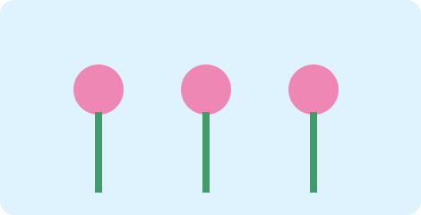

1. Квітковий сад
Створіть ряд квітів за допомогою циклу.
⌨️ Відкрити заготовку коду
import pgzrun
WIDTH = 600
HEIGHT = 400
def draw():
screen.fill("lightyellow")
for x in range(80, 560, 95):
screen.draw.filled_circle((x, 170), 25, "pink")
screen.draw.line((x, 195), (x, 290), "green")
# TODO: розширте цикл або список
pgzrun.go()Що дописати
- Змініть кількість квітів і палітру пелюсток.
- Змініть щонайменше два параметри та перевірте результат запуском.